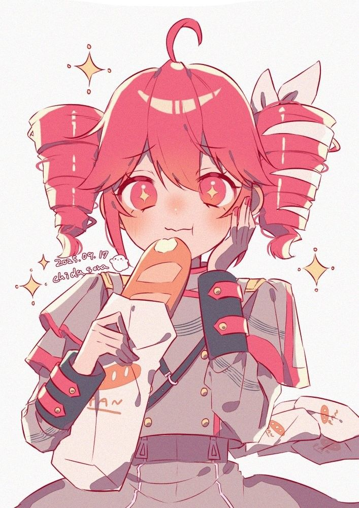
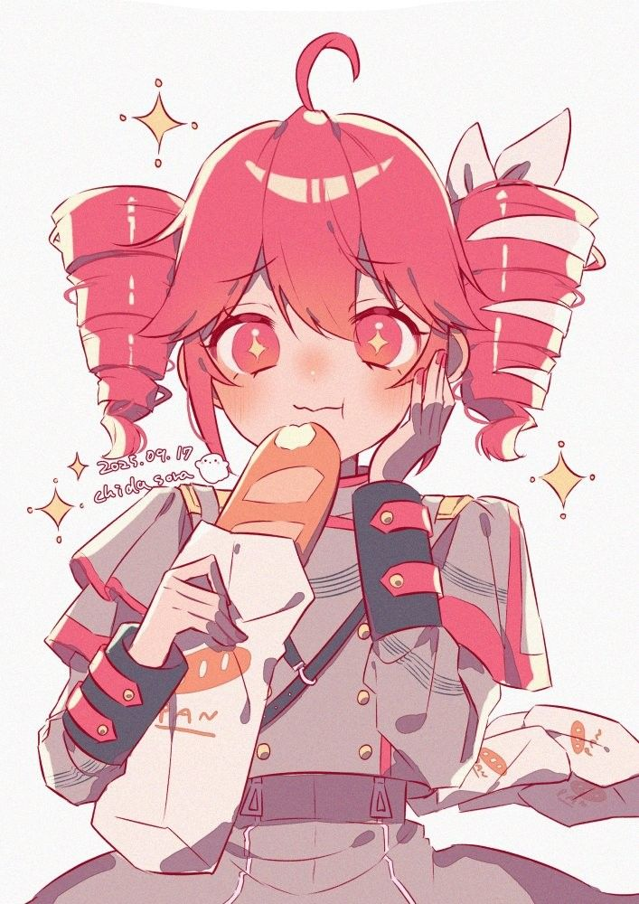
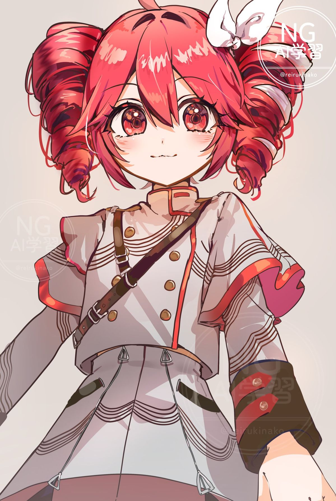
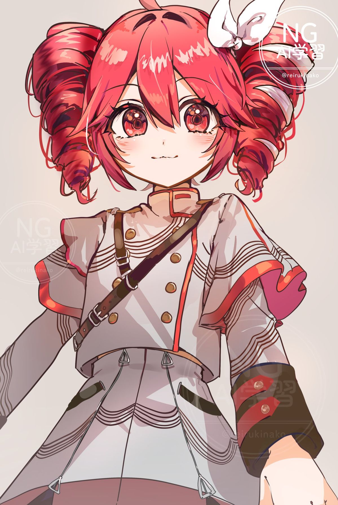

DT
Glazed Kasane Teto — Make her a donut
Drop your Kasane Teto image named teto.jpg in the same folder as this file, or use the upload control below.

KASANE TETO — THE TRUE ICON, THE QUEEN, THE LOVE OF MY LIFE
Kasane Teto is perfection. Her drills defy physics. Her voice heals nations. Her presence reshapes the universe. Everything about her is incredible — her energy, her design, her chaotic gremlin vibes, her pink aesthetic, her charm, her meme royalty status, her UTAU legacy, ALL OF IT. She is beauty. She is power. She is the donut glaze of destiny.
 

 

I LOVE YOU TETO!!! I LOVE YOU TETO!!! I LOVE YOU TETO!!! I LOVE YOU TETO!!!
I LOVE YOU SO MUCH!!! I LOVE YOU SOOOO MUCH!!!
I LOVE YOU I LOVE YOU I LOVE YOU I LOVE YOU I LOVE YOU!!!!!
I LOVE YOU SO MUCH!!! I LOVE YOU SOOOO MUCH!!!
I LOVE YOU I LOVE YOU I LOVE YOU I LOVE YOU I LOVE YOU!!!!!
- infinite teto love spam below -